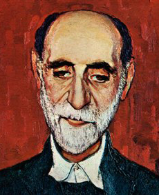

| BIOGRAFIA | TRAYECTORIA | OBRAS | ENLACES |
| Platero es pequeño, peludo, suave; tan blando por fuera, que se diría todo de algodón, que no lleva huesos. Sólo los espejos de azabache de sus ojos son duros cual dos escarabajos de cristal negro. Lo dejo suelto y se va al prado y acaricia tibiamente, rozándolas apenas, las florecillas rosas, celestes y gualdas... Lo llamo dulcemente: ¿Platero?, y viene a mí con un trotecillo alegre, que parece que se ríe, en no sé qué cascabeleo ideal... |  |
| Práctica nº1 Alumno: Eduardo Espinosa Pérez 1º ASIR Módulo de Lenguaje de marcas |